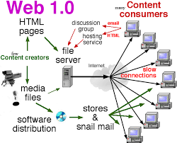

Web 1.0 refers to the first stage of the World Wide Web evolution. Earlier, there were only a few content creators in Web 1.0 with a huge majority of users who are consumers of content. Personal web pages were common, consisting mainly of static pages hosted on ISP-run web servers, or free web hosting services.
• Static pages.
• Content is served from the server’s file system.
• Pages built using Server Side Includes or Common Gateway Interface (CGI).
• Frames and Tables are used to position and align the elements on a page.
• Easy to connect static pages with the system via hyperlinks
• Supports elements like frames and tables with HTML 3.2
• Also has graphics and a GIF button
• Less interaction between the user and the server
• Provides only a one-way publishing medium
• You can send HTML forms via mail
